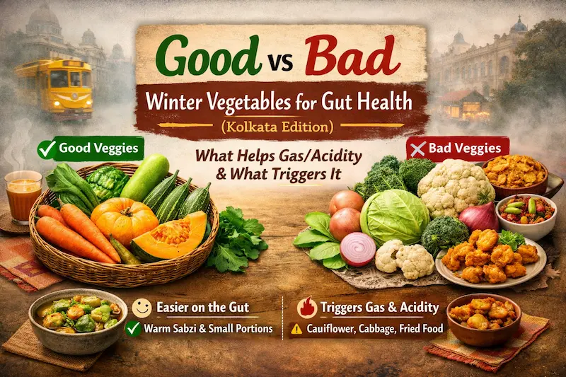
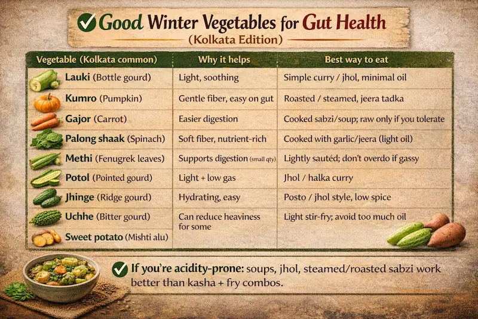
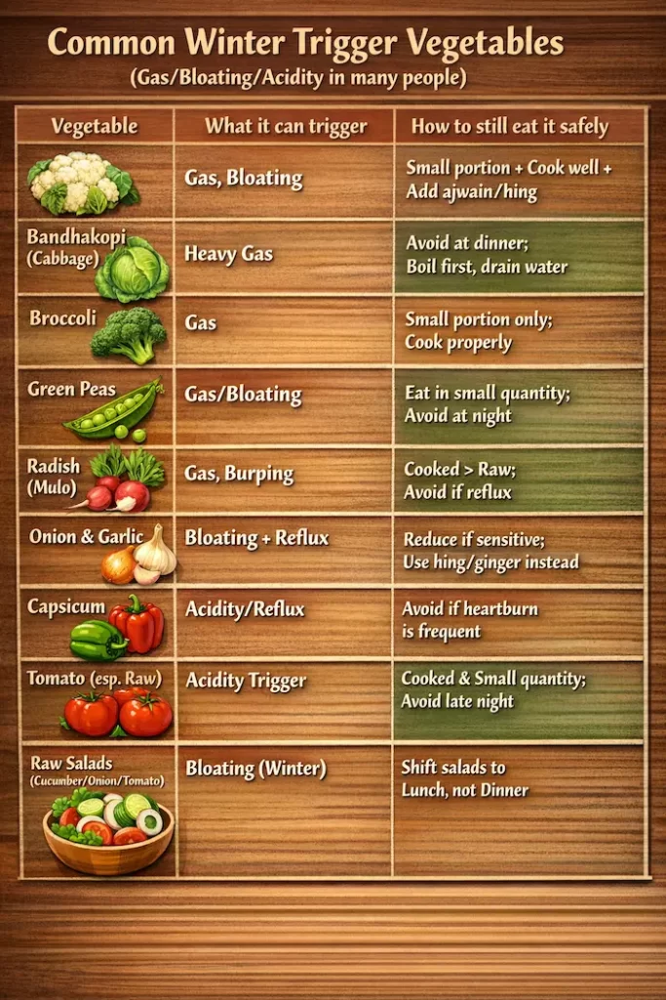
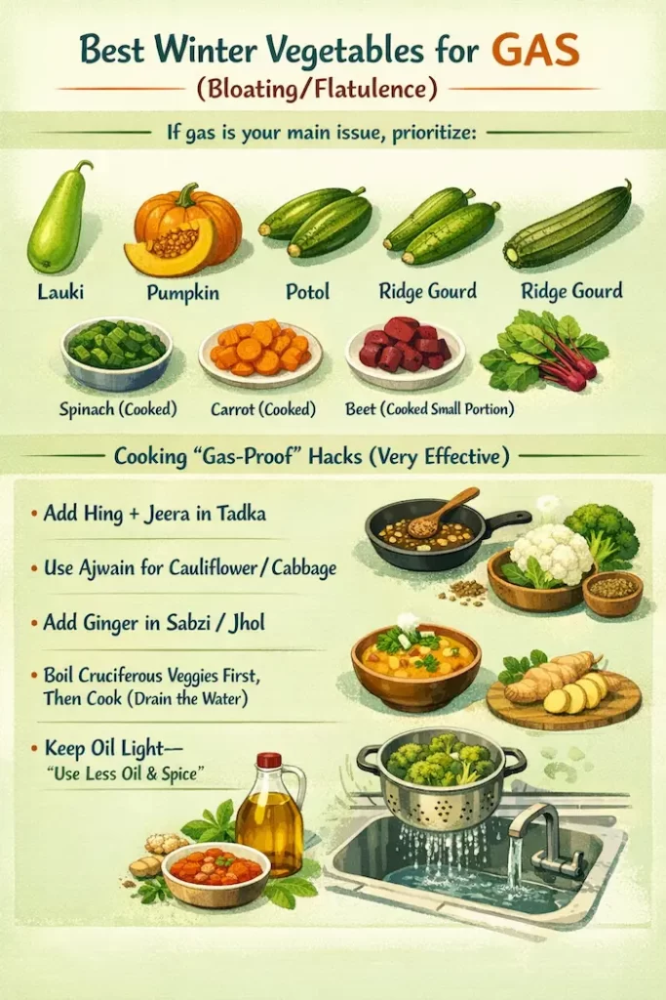
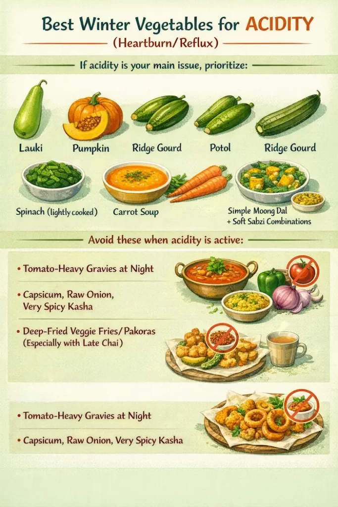

Kolkata winter is a vibe—foggy mornings, extra chai, heavier meals, and “just a little more” fried stuff. The problem?
Vegetables are supposed to help your gut—but some winter favourites can quietly trigger gas/acidity depending on how you cook them, how much you eat, and what your stomach is sensitive to.
This guide breaks it down in a very Kolkata-friendly way.
Why some vegetables cause gas or acidity

Gas/Bloating happens when:
• Certain veggies have fermentable carbs (FODMAPs) → gut bacteria ferment them and produce gas
• They’re “cruciferous” vegetables → they contain sulfur-rich compounds + specific fibers that can ferment more, causing bloating and sometimes a stronger gas smell
• You eat them raw, in big portions, or too fast
Acidity/heartburn happens when:
• Your meal is too oily/spicy
• You eat late, lie down soon after, or drink too much tea/coffee
• You combine trigger foods like tomato + chilli + fried (classic winter combo)
Important: No vegetable is “bad” for everyone. The real question is:
✅ Which ones are usually easier on the gut in winter?
⚠️ Which ones commonly trigger gas/acidity in sensitive people?
What does “cruciferous” mean?
Cruciferous vegetables are a family of veggies (Brassica family) known for their strong nutrients and sulfur compounds. They’re super healthy—but in many people (especially in winter), they can cause gas/bloating if eaten in large portions or not cooked well.
Common cruciferous veggies in Kolkata kitchens:
• Cauliflower
• Cabbage
• Broccoli
• Radish (yes—radish belongs to this family too)
• Certain cruciferous leafy greens (winter leafy “shaaks”):
o Mustard greens
o Radish leaves
o Turnip greens (if available locally)
o Cabbage greens / cabbage leaves (sometimes cooked like leafy greens)
Why they cause gas:
They contain sulfur compounds and fibers that are more likely to ferment in the gut, especially when raw/half-cooked or eaten in large portions.
Good news: You don’t need to “ban” them—just cook smart.
The Kolkata winter rule for gut-friendly vegetables
If you have gas/acidity often, follow these 5 rules:
- Cooked > raw (warm cooked sabzi beats salad in winter)
- Small portions of trigger veggies (don’t make cauliflower the whole meal)
- Add digestion helpers: cumin, ajwain, hing, ginger
- Avoid deep-frying vegetables if you’re acidity-prone
- Dinner lighter than lunch (especially if reflux happens at night)
Quick Guide: Good vs Trigger Veggies (and how to eat them)
✅ Usually gut-friendly in winter (helps gas/acidity when cooked right)
Vegetable (Kolkata common) Why it helps Best way to eat
Bottle gourd Light, soothing Simple curry, minimal oil
Pumpkin Gentle fiber Roasted/steamed, cumin tadka
Carrot Easy digestion Cooked sabzi/soup; raw only if you tolerate
Spinach Soft fiber, nutrient-rich Cooked with garlic/cumin (light oil)
Fenugreek leaves Supports digestion (small quantity) Lightly sautéed; don’t overdo if gassy
Pointed gourd Light + low gas Light gravy/low spice curry
Ridge gourd Hydrating, easy Light gravy, low spice
Bitter gourd Can reduce heaviness for some Light stir-fry; avoid too much oil
Sweet potato Filling, but can gas in excess Boiled/roasted; small portions
If you’re acidity-prone: soups, light gravies, steamed/roasted vegetables work better than heavy fried combinations.
Common winter trigger vegetables (gas/bloating/acidity in many people)

- Vegetable What it can trigger How to still eat it safely
- Cauliflower (cruciferous) Gas, bloating Small portion + cook well + add ajwain/hing
- Cabbage (cruciferous) Heavy gas Avoid at dinner; boil first, drain water
- Broccoli (cruciferous) Gas Small portion only; cook properly
- Green peas Gas/bloating Eat in small quantity; avoid at night
- Radish (cruciferous) Gas, burping Cooked > raw; avoid if reflux
- Onion & garlic Bloating + reflux Reduce if sensitive; use hing/ginger instead
- Capsicum Acidity/reflux Avoid if heartburn is frequent
- Tomato (especially raw) Acidity trigger Cooked & small quantity; avoid late night
- Raw salads (cucumber/onion/tomato) Bloating (winter) Shift salads to lunch, not dinner
Best winter vegetables for GAS (bloating/flatulence)

If gas is your main issue, prioritize:
• Bottle gourd, pumpkin, pointed gourd, ridge gourd
• Spinach (cooked), carrot (cooked), beetroot (cooked small portion)
Cooking “gas-proof” hacks (very effective)
• Add hing + cumin in tadka
• Use ajwain for cauliflower/cabbage
• Add ginger in sabzi/light gravies
• For cruciferous veggies (cauliflower/cabbage/broccoli/radish + mustard greens/radish leaves/turnip greens):
✅ Boil first, then cook (and drain the water)
• Keep oil light—too much mustard oil + spice can worsen both gas and acidity
Best winter vegetables for ACIDITY (heartburn/reflux)

- If acidity is your main issue, prioritize:
- • Bottle gourd, pumpkin, ridge gourd, pointed gourd
- • Spinach (lightly cooked), carrot soup
- • Simple moong dal + soft cooked vegetable combinations
- Avoid these when acidity is active
- • Tomato-heavy gravies at night
- • Capsicum, raw onion, very spicy preparations
- • Deep-fried vegetable fries/pakoras (especially with late chai)
“But Kolkata food needs flavor” — yes, you can still eat tasty and gut-safe
Try these Bengali-style-inspired gut-friendly combos (kept simple and light):
- Bottle gourd + cumin light curry
Light, soothing, works great for acidity days. - Pumpkin with cumin + hing
Pumpkin becomes very gut-friendly with minimal spice. - Pointed gourd light gravy
Better than deep-fried pointed gourd if you’re gassy. - Spinach (soft cooked)
Keep it simple, avoid over-oiling.
Portion guide (simple and practical)
- Even “good” veggies can cause issues if you overdo.
- • Trigger veggies (cauliflower/cabbage/peas): ½ cup cooked max per meal (if sensitive)
- • Gut-friendly veggies (bottle gourd/pumpkin/gourds): 1 cup cooked is usually okay
- • Raw salad in winter: keep it small, at lunch, not dinner
1-day sample winter plate (Indian Bengali-style Thali – Kolkata-friendly)
This is a practical, everyday plate that stays warm, comforting, and gut-safe in winter—especially if you deal with gas/acidity.
Breakfast (winter-friendly, low-acid)
• 2 rotis or 2 small luchis (if you tolerate fried food)
• Light potato + pumpkin curry (less oil)
• Ginger tea (small cup) + warm water after 20–30 minutes
If acidity is active: reduce tea and switch to warm water or cumin water.
Lunch (proper comfort plate – gut-calming)
Base
• Steamed rice (medium bowl)
• Moong dal with cumin + hing tadka
Vegetables (choose 1–2)
• Bottle gourd light gravy / ridge gourd light gravy / pointed gourd light gravy (low spice)
Protein (light option)
• Light fish curry or light egg curry
If reflux: keep spices minimal, avoid extra chilli.
Sides
• Roasted papad (avoid fried)
• Chutney: small quantity; skip tomato-heavy chutney if acidity is active
Post-meal habit
• Warm water + 10-minute slow walk (very effective for bloating)
Evening snack (non-trigger)
Pick one:
• Puffed rice + roasted chana/makhana (no raw onion/tomato)
• A small bowl of flattened rice preparation (minimal oil)
• 1 fruit (banana/guava if you tolerate)
Avoid: fried snacks + extra tea combo on acidity days.
Dinner (light – reflux-safe)
Option A (best for acidity)
• Vegetable soup (bottle gourd/pumpkin/carrot)
• 2 rotis
• Soft cooked spinach (low oil)
Option B (if you want rice)
• ½ bowl rice
• Thin moong dal
• Pumpkin mash or bottle gourd curry (soft cooked)
✅ Dinner rule for night reflux: finish dinner 2.5–3 hours before sleep.
Mini “Kolkata winter gut” upgrades • Hing + cumin in most sabzi• Ajwain when eating cauliflower/cabbage• Ginger in light gravies/sabzi• Mustard oil is fine—just use less (too much oil = acidity trigger)
When gas/acidity is NOT normal (see a doctor)
- Don’t self-manage for too long if you have:
- • Burning chest pain, frequent night reflux
- • Vomiting, black stools, blood in stool
- • Unexplained weight loss, persistent loss of appetite
- • Severe upper abdominal pain (especially after meals)
- • Symptoms that keep returning despite diet changes
FAQs
Is cauliflower totally banned?
No. Cook it well, reduce portion, and avoid eating it at night if you bloat.
Is raw carrot okay?
For many people yes, but in winter, cooked carrot is easier on digestion.
What about radish in winter?
Radish is cruciferous. If you get burps/reflux, it can worsen it. Cooked is better than raw.
Mustard oil—yes or no?
Yes, but less quantity matters. Too much oil is a common acidity trigger.
Quick takeaway
• For gas: choose bottle gourd/pumpkin/gourds + cook cruciferous veggies well + use hing/ajwain
• For acidity: keep dinner light, avoid tomato-heavy spicy food, reduce tea/fried combos
• Cooked vegetables + small portions + warm meals = winter gut win
Have a question this article does not answer?
Send us your reports. A specialist reviews them before you travel, so the first visit begins with a plan rather than a repeat test.